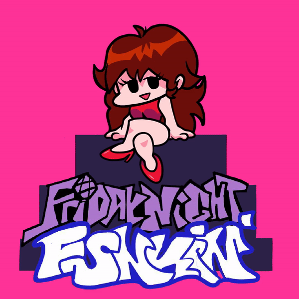

Similar to PaRapPa the Rappa, Friday Night Funkin' is a new and upcoming rhythm game created by NinjaMuffin99. Alongside Cameron, Kawai Sprite, PhantomArcade, and EvilSk8er help with the music, animation, and art respectively. As of April, no new updates have been provided on the games status, but an update was postponed in order to make sure everything was to a more playable level.
On October 5, 2020, FNF was created for the "Stuck-in-a-loop" Ludum Dare game jam. While the rythimc droning of beeps and boops doesn't seem like a loop, the game wasn't meant to be exactly like the stipulations. Cameron himself said, "Decided to make a rhythm game before the theme, and music is slightly adjacent to looping right? Alright you get it I ain't rollin with the theme this time around, I just wanted an excuse to make a cool game over the weekend."
